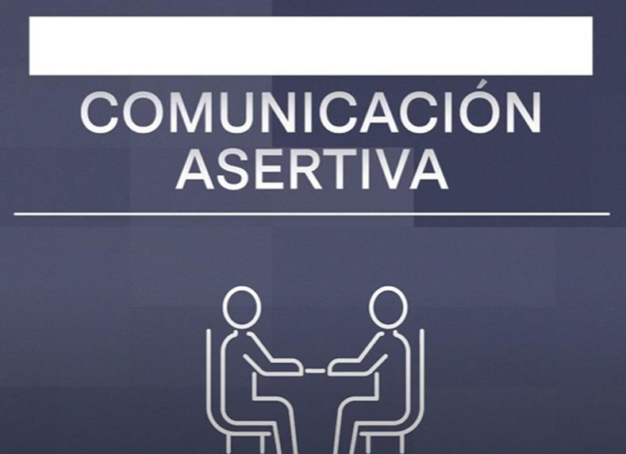

Decidí crear un video de TikTok explicando todo sobre Cancún como parte de mi práctica de inglés. Investigué a fondo sobre la historia, cultura y atracciones de Cancún para asegurarme de ofrecer información precisa. Luego, utilicé mis habilidades de edición para estructurar el video de manera dinámica y atractiva, utilizando imágenes llamativas y música animada. Fue una experiencia emocionante poder combinar mi pasión por el aprendizaje del idioma con la creatividad digital. El resultado final fue un contenido educativo y entretenido que me ayudó a mejorar mis habilidades en inglés mientras compartía conocimientos sobre este hermoso destino turístico.
Inglés
Competencia 5
Comunicación asertiva